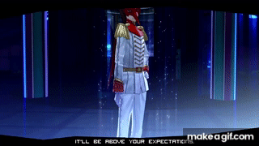
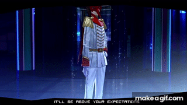

Akechi Goro or we know as Crow is the 8th person you meet who has unlocked their persona and is the protagonist's rival. The school Akehi goes never been revealed in-game but he's a third-year student, making him older than the protagonist. He’s well known as Prince Detective who helps cases in the station and investigate any weird thing that’s currently happening. An intelligent student, he strives for perfection and is very particular about his grades and image. Due to his fame as a detective, Akechi is pretty recognizable and a celebrity even among students, and he appears on television shows.
At first, Akechi seems nice and wants to help out the Phantom Thieves of Hearts and help them to keep their identity hidden from citizens around the world. But in reality, Akechi's goal is to infiltrate and ultimately betray them as part of a plan made by Masayoshi Shido, AKA, his dad.This was a calculated move designed to achieve his own, separate goals—mainly to satisfy his jealousy and get his revenge.
 

Akechi is a very complex character who begins as the "Detective Prince," a rival hero of justice, but is eventually revealed to be the ruthless assassin for Masayoshi Shido. On the outside, Akechi seems like the sweet-nice man who is very enthusiastic and willingly helps anyone who is in need. But behind the mask he wears, he wishes he wasn’t born at all and has a strong desire for revenge whose actions are motivated by his tragic neglect and abusive childhood. He wants to take revenge on his father, Masayoshi Shido, who he seeks for validation even though he despises him with a raging flame.
Not only that, but he has a very complex relationship with the protagonist Ren. At first, Akechi is just a friendly guy who wants to help the phantom thieves and the main “friendly rival" in the game. Akechi heavily envies the protagonist's ability on forming bonds with people in his surroundings, which Akechi never has in his life. His interactions with the protagonist are filled with competitiveness that is driven by his ego and the desire to be superior. Though this may seem like his hatred towards the protagonist, he never initially hated him, just wished he had the things that the protagonist has—friends. Akechi Goro is just a lonely kid who thinks he needs to be perfect to be able to have friends and share an experienceable memory.